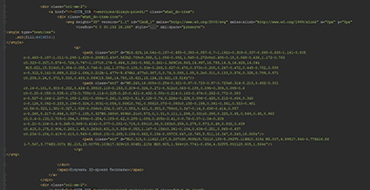
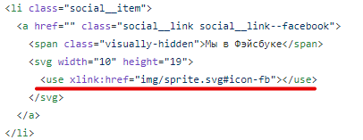
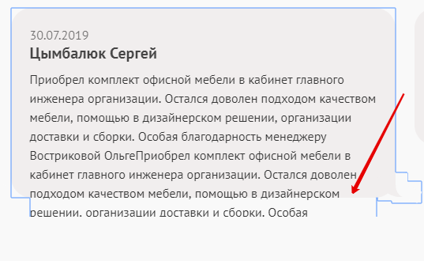

Для соблюдения правил и единообразия кода в проекте присутствует stylelintrc.
Вложенность селекторов не больше трех. Псевдоэлементы, псевдоклассы, а также такие
селектора, как .class__name + .class__name-two вложенности не добавляют.
Плохо:
.class ul li a {...}
Хорошо:
.class a {...}
Через id стилизация запрещена.
Плохо:
#class__name {...}
Хорошо:
.class__name {...}
Запрещено использовать !important для того, чтобы "перебить" более старые классы.
Стилизация элементов происходит по имени класса, а не тегу.
Глобальные стили запрещены.
Плохо:
ul {
list-style: none;
}
Исключения:
a {
text-decoration: none;
}
img {
max-width: 100%;
height: auto;
}
body {...}
Цвет задается шестнадцатеричным значением без сокращений.
При необходимости прозрачности использовать rgba().
Контентные svg должны быть заинлайнены в html через спрайт.
Плохо:

svg заинлайнена в разметку, что засоряет код
Хорошо:

svg берется из спрайта, код остается чистым, иконки подгружаются автоматически
У заинлайненых svg должны быть прописаны ширина и высота.
Плохо:
<svg>...</svg>
Хорошо:
<svg width="10" height="10">...</svg>
Неконтентные svg задаются фоном через css, либо контентом через псевдоэлемент.
Как отличить контентные svg от неконтентных: контентные меняются при взаимодействии: меняется цвет, размер и т.д. Если меняется только прозрачность, смотреть по ситуации.
JS
В случае необходимости отключить работу элемента по умолчанию, необходимо использовать preventDefault.
Используются одинарные кавычки. В случае вложенности разрешенно комбинировать олдинарные кавычки с двойными.
Для именования переменных и id для js используется стиль camelCase.
Классам, которые прописываются только для js, необходимо добавлять префикс js-
Для классов, которые срабатывают в случае отключенного js, необходимо приписывать префикс no-js-
Имена переменных должны явно говорить о том, для чего они.
Шрифты
Иконочные шрифты использовтать запрещено. Если возможно, делаем элемент на css, если
нет,
необходимо реализовать иконку в svg.
Доступность
Всему тексту всегда задается контрастный фон для удобочитаемости.
В случае фона-картинки необходимо задавать страховочный фон.
<img src="image/map.jpeg" alt="Мы находимся по адресу: ...">
Общие правила
Адаптивная верстка происходит по методу mobile first.
Используется прогрессивное улучшение. Это значит, что при неработающем js все
элементы
по-прежнему работают, и пользователь может получить всю необходимую ему информацию
даже при
медленном интернете.
Кнопка, вызывающая попап, при выключенном js должна вести на подобную страницу.
Бургер-меню при выключенном js есть в потоке.
При выключенной интерактивной карте всегда есть страховочная картинка-подложка с адресом.
Верстка должна проходить тест на переполнение.
Плохо:

Тест переполнения контентом не пройден: контент выпадает
Некоторые уточнения для работы с гитом
Каждая задача решается в своей ветке, после чего делается pull request в
мастер-репозиорий.